Using Technology to Govern Technology: How AI Regulation in Europe, the United States, Japan, and Singapore Is Becoming More Technological
Key Points
- Global AI governance is shifting from high-level principles to technically verifiable implementation, with the UN helping legitimize assessment, testing, and audit as core governance tools.
- Singapore's AI Verify exemplifies a voluntary, test-and-disclose model that turns responsible AI principles into standardized technical evaluation and reporting.
- Major jurisdictions are diverging along three paths—legal, tool-based, and methodological—but all aim to make fairness, transparency, and safety measurable and auditable.
- Because AI systems are opaque, fast-changing, and infrastructure-like, effective governance increasingly requires technical controls, shared assessment infrastructure, and eventually compliance-by-design.
1. Global AI Governance Reaches a "Technical Inflection Point": From Principles and Consensus to Verifiable Practice
As artificial intelligence rapidly penetrates every sector, a broad international consensus is emerging: effective AI governance cannot rely on abstract norms alone, but must be implemented through technical means. For several years, many national AI policies remained at the level of ethical declarations and broad principles, without practical or verifiable enforcement mechanisms. In 2024 and 2025, however, a series of high-level documents, including UN resolutions and inter-agency policy papers, pushed global AI governance away from paper commitments and toward technically grounded implementation. In this shift, governing technology with technology has become the central direction.
UN Document Sets the Tone: Technical Assessment Becomes a Core Tool for Global Governance
In March 2024, the UN General Assembly unanimously adopted its first formal assembly-level resolution explicitly focused on artificial intelligence. Although the resolution was framed in broad and principled language rather than detailed technical standards, it explicitly identified a range of technical governance tools, including watermarking and labeling, content authentication and provenance, vulnerability and incident reporting mechanisms, risk monitoring and impact assessment, AI system security, and standards for training and testing. That move gave national experimentation in technical governance important international legitimacy.
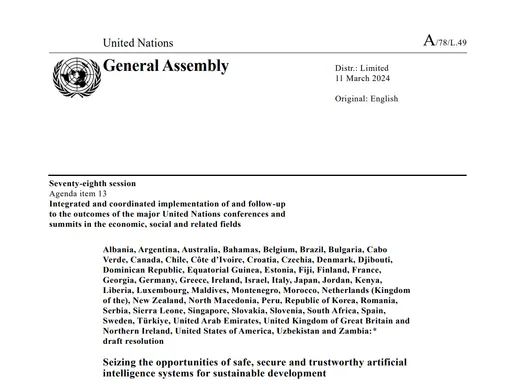
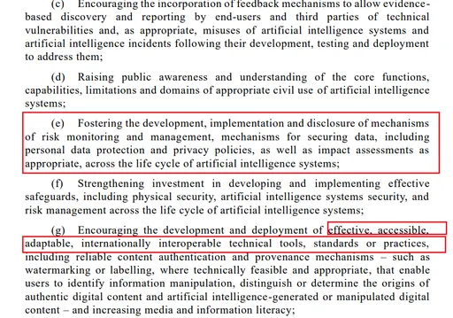
A month later, the UN system’s Chief Executives Board for Coordination released a white paper on AI governance endorsed by more than forty UN entities. The paper organized AI governance within the UN system into three major areas: mapping existing rules and standards, defining institutional functions, and identifying forward-looking governance methods. Most importantly, it placed technical assessment at the top of its institutional toolkit and stressed that coordinated global action is difficult without empirical and scientific evidence. While the document focused primarily on how the UN system itself should govern and use AI internally, its emphasis on assessment, auditing, standards, and sandbox-style testing further consolidated the global turn toward technical governance.
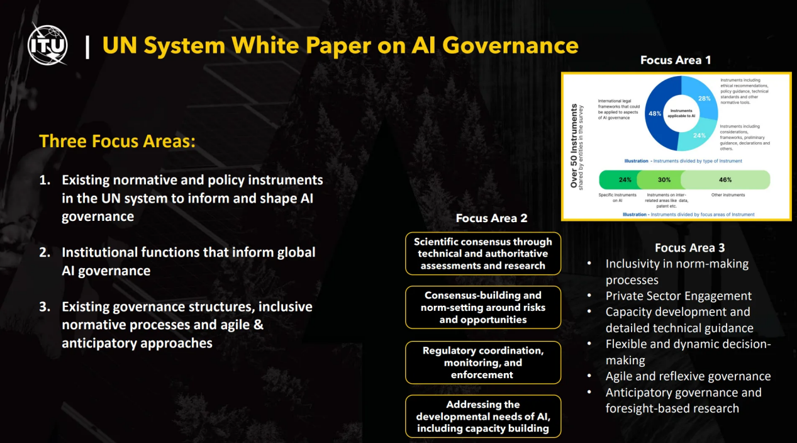
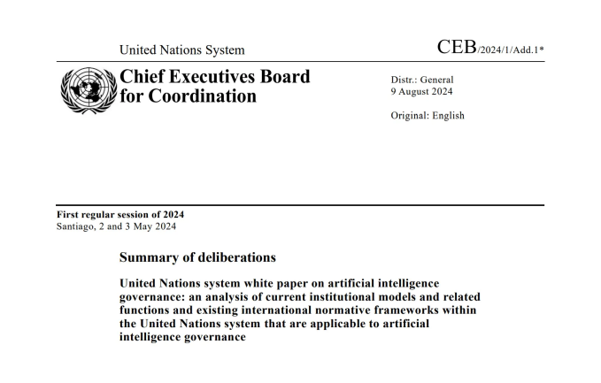
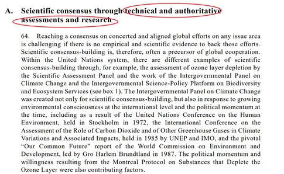
SCO Tianjin Summit: Focusing on Late-Mover Countries' AI Technology-Driven Governance Capacity
At the 2025 SCO Tianjin Summit, member states reached a supplementary consensus on AI governance that echoed the UN line. They reaffirmed the core principles of the UN resolution, recognized technology-driven governance as the global direction, rejected unilateral rule-setting, and emphasized the UN’s central role in global AI governance. Just as importantly, they highlighted the need to strengthen the governance capacity of late-mover countries through shared testing tools and technical training. This marked an effort to translate the technical turn in AI governance into regional cooperation and capacity-building.
2. Singapore AI Verify
Singapore’s AI Verify, led by the Infocomm Media Development Authority, is widely regarded as the world’s first voluntary AI governance testing framework and toolkit. Its core purpose is to translate abstract principles of responsible and trustworthy AI into operational and verifiable tests. Rather than treating governance as a purely legal or ethical exercise, AI Verify builds a common structure for technical evaluation and structured disclosure.
The Content and Logic of the AI Verify Framework
In essence, AI Verify is a voluntary framework for testing and disclosure. Organizations can run technical tests on their AI models and related data, complete governance checklists and evidence statements, and generate standardized assessment reports. Those reports can help companies identify risks such as bias and weak robustness in their own systems, while also serving as evidence of responsible practice for customers, partners, and regulators. The framework’s significance lies in its effort to make broad governance expectations concrete, comparable, and reviewable.
How Does AI Verify Operate?
AI Verify operates in two main ways. The first is self-assessment: organizations use the published standards and open-source testing tools, run the relevant checks themselves, complete the required process documentation, and produce a standardized report. This allows them to detect problems early and communicate their governance posture externally.
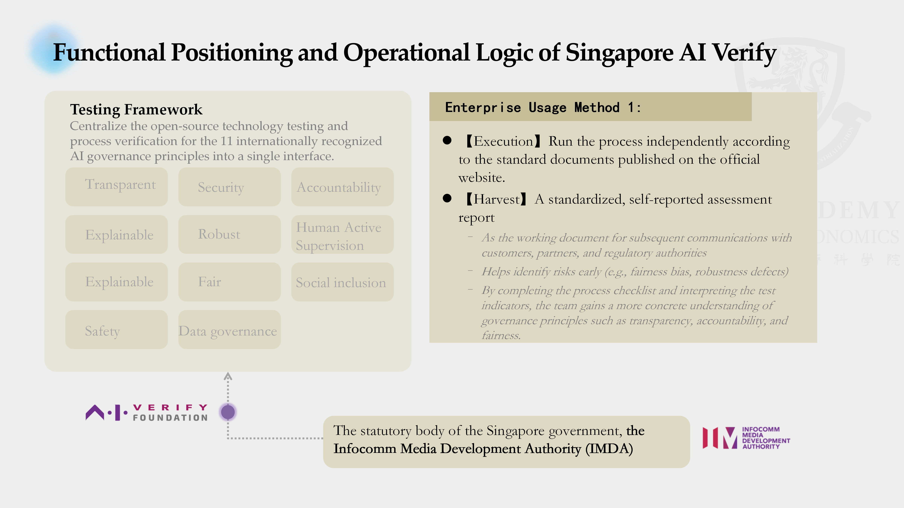
The second is sandbox validation. Organizations can submit serialized model files together with self-reported governance materials to the Global AI Assurance Sandbox, where independent technical testing providers selected by the government conduct third-party validation. Successful participants may receive a form of responsible AI credential that can strengthen their position in government collaboration and innovation programs. In this sense, the toolkit functions not just as a compliance aid but as a governance instrument linked to market and policy incentives.
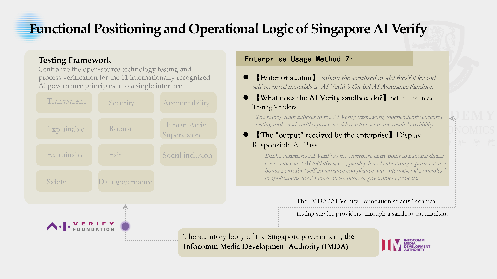
Core Philosophy: "Verify and Disclose" Rather Than "Certify and License"
The underlying philosophy of AI Verify is not to create a rigid licensing regime in which a central authority simply issues approvals. Instead, it is built around verification and disclosure. The premise is that AI risks are technically complex, highly dynamic, and often transnational, so rules alone are difficult to enforce in practice. Without technical evidence, legal obligations can easily become symbolic—rules exist, but cannot be checked, punished, or made effective.
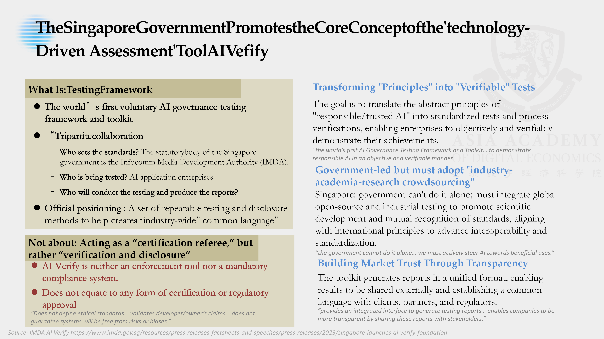
By creating a structured system of testing, verification, and reporting, AI Verify makes governance goals technically examinable. This strengthens both enforceability and adaptability. Its model is therefore lighter than a traditional certification system, but often more operational: it seeks to create credible evidence of responsible practice rather than rely solely on formal permission from the state.
3. Practices in Other Countries
Other major jurisdictions have also moved toward more technically grounded approaches to AI governance, though they differ in style, institutional design, and degree of legal force. Together, these experiments illustrate several distinct routes for turning governance principles into operational mechanisms.
United Kingdom: AISI Inspect Framework — Proactive Risk Assessment Practice
The United Kingdom’s approach centers on the AI Safety Institute, housed within the Department for Science, Innovation and Technology. Its Inspect framework focuses on evaluating the safety risks of advanced AI systems, making it narrower than Singapore’s broad-spectrum testing model and more explicitly oriented toward high-risk frontier systems.
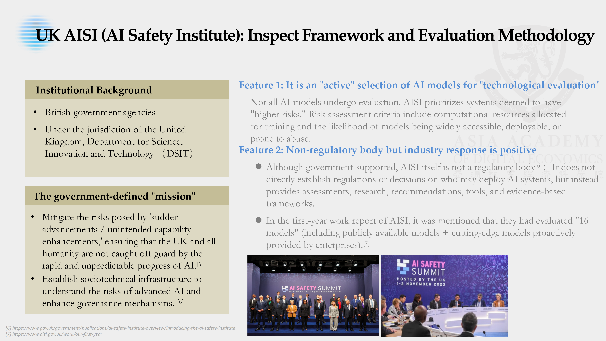
The institute’s mission is twofold: to reduce the danger of sudden, unexpected capability advances and to build the sociotechnical infrastructure needed for regulators and policymakers to understand frontier AI risks. Importantly, the institute is not itself a regulator. It does not directly write binding rules or prohibit deployment. Instead, it acts as a technical assessor, a role that helps preserve technical credibility while encouraging cooperation from industry.
In practice, the UK model is selective rather than universal. It prioritizes evaluation of systems judged to pose greater risk, using factors such as training compute, deployment scope, and misuse potential. Early results suggest a meaningful degree of operational traction, with assessments conducted on both public models and frontier systems voluntarily provided by companies.
European Union: "Harmonised European Standards (hEN) for AI" — The Technical Transposition of Regulatory Provisions
The European Union has taken the most legalistic route. With the AI Act entering into force in 2024, the EU established the first comprehensive mandatory regulatory framework covering the AI lifecycle. Rather than directly releasing a testing toolkit, the EU relies on harmonised European standards to convert abstract legal obligations into verifiable technical specifications.
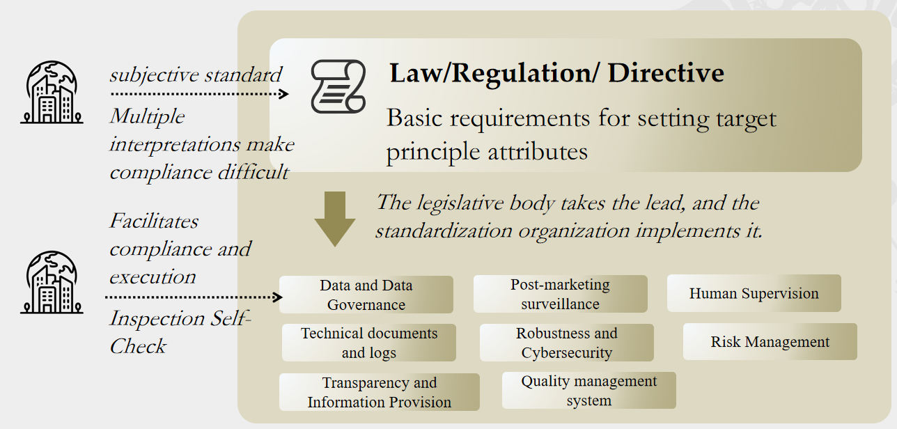
This reflects the logic of the EU’s New Legislative Framework. Legislation sets out essential requirements at a high level, while standardization bodies translate those requirements into detailed technical standards. Once such standards are published in the EU’s official framework, they gain real legal significance: compliance with them becomes a practical condition for market access. For high-risk AI systems, failure to meet the relevant standards can mean exclusion from deployment in the European market.
Compared with Singapore, the EU model is more top-down and legally binding. It offers greater formal authority and stronger enforcement, but it is also slower to update and more dependent on lengthy standard-setting processes.
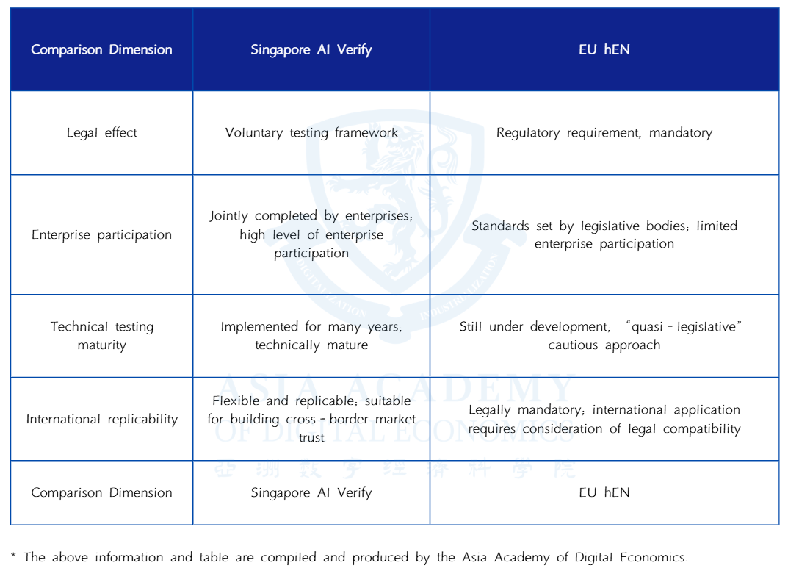
United States: NIST AI RMF and the AI Safety Institute — Combining Methodology with Technical R&D
The United States has adopted a more plural and less centralized approach, combining methodological guidance with technical research and development. It remains in a transitional phase between high-level risk management frameworks and more concrete technical evaluation practices. Unlike Singapore, it has not consolidated governance into a unified operational toolkit, and unlike the EU, it has not enacted a single nationwide AI law.
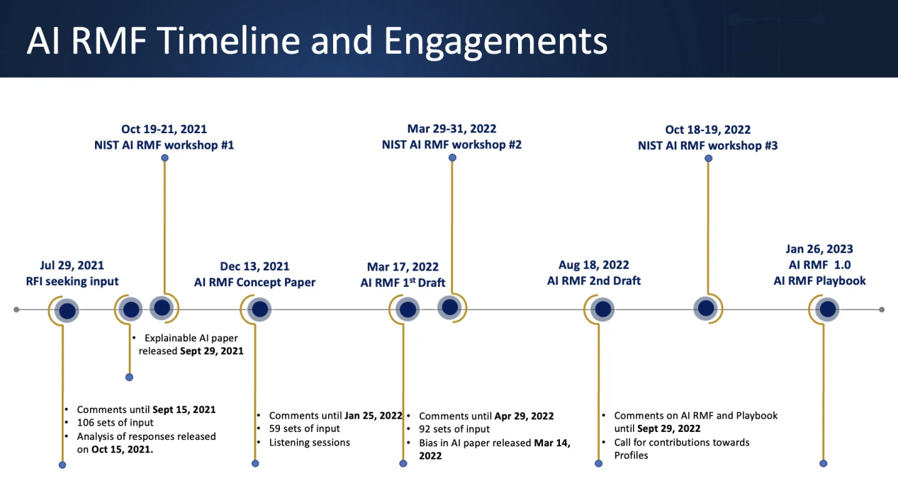
At the center of the U.S. approach is the NIST AI Risk Management Framework, released in 2023. It is designed to help organizations identify, assess, manage, and monitor risks across the AI lifecycle through four core functions: govern, map, measure, and manage. Although it is not legally binding, it has become a default reference point for many U.S. firms and public bodies.
Alongside this framework, the United States is expanding technical evaluation capacity through multiple channels. The NIST-linked AI Safety Institute works on benchmarks and red-teaming for frontier models; defense agencies such as DARPA continue to fund trusted-AI verification research; and major companies have built internal and external testing ecosystems of their own. The result is a fragmented but dynamic governance model driven by methodology, research, and industry practice rather than a single mandatory regime.
Japan: AI Governance Guidelines and Process Verification — Process-Oriented Soft Law Practices
Japan’s approach is process-oriented and rooted in soft law. Instead of creating a unified automated testing platform, it has emphasized internal governance systems and organizational responsibility, especially through the Ministry of Economy, Trade and Industry’s AI Governance Guidelines.
The trajectory began with high-level AI principles issued by the Cabinet Office, followed by METI’s governance guidelines in 2021, which focused on how firms should implement those principles in practice. Subsequent updates developed a cyclical governance model of risk identification, countermeasure design, verification, and improvement. The guidelines are not mandatory, but firms that follow them may benefit from policy support and favorable institutional treatment.
Japan has also supported technical verification work through public research institutions, but the emphasis is not on a universal toolkit. Instead, testing methods tend to be tailored to specific high-risk sectors such as healthcare and autonomous driving, with attention to transparency, robustness, and fairness. Compared with Singapore, Japan gives more weight to governance processes and internal accountability structures than to standardized automated testing.
4. Global Comparative Analysis: Three Major Governance Directions and the Dilemmas of Late-Mover Countries
Taken together, current international practice can be grouped into three broad governance directions: law-oriented, tool-oriented, and methodology-oriented. Each path has its own institutional logic, strengths, and limitations, but all seek to solve the same fundamental problem: how to convert abstract commitments such as fairness, transparency, and safety into something testable, reproducible, and auditable.
A Comparative Summary of the Three Paths
The law-oriented path, represented by the European Union, begins with legislation and translates legal duties into technical standards. Its strength lies in clarity of authority and formal enforceability, but its weakness is slower adaptation and lengthy standardization cycles.
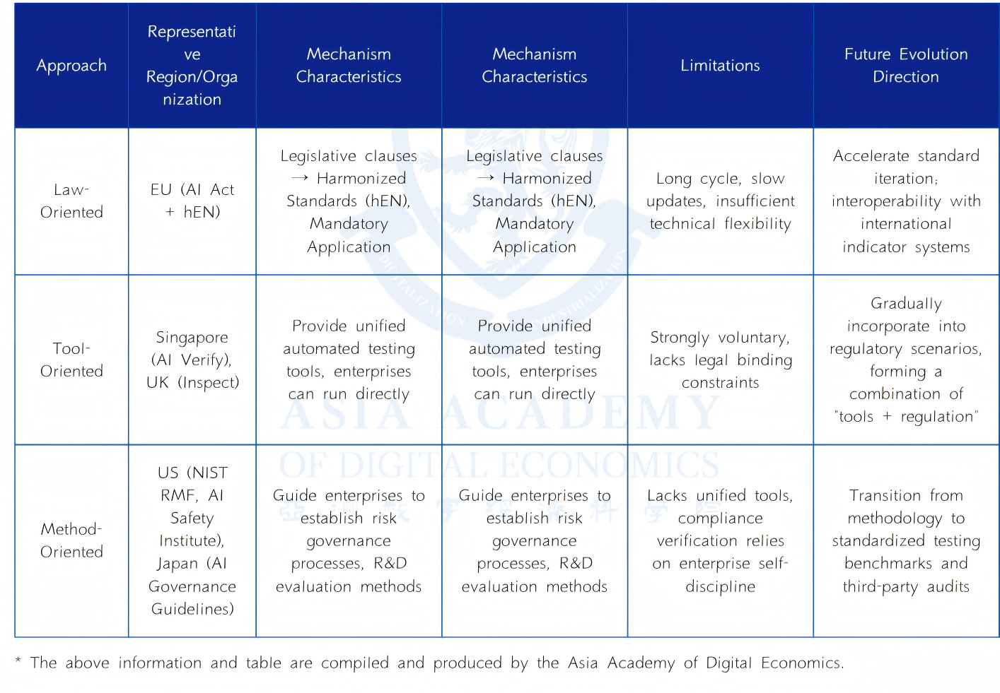
The tool-oriented path, represented most clearly by Singapore and in part by the United Kingdom, emphasizes unified operational tools that organizations can directly use to produce comparable results. This model has strong implementation value and tends to encourage greater participation from industry, but its legal force is often weaker unless connected to procurement, market incentives, or later regulation.
The methodology-oriented path, seen in the United States and Japan, focuses on risk management frameworks and governance processes across the AI lifecycle. It is flexible and innovation-friendly, but in practice it depends more heavily on voluntary uptake and third-party ecosystems to generate credible evidence of compliance.
Trends in Regulatory Development: The Technologization of Regulation = The Contest Between Metrology and Infrastructure
The deeper trend is that regulation itself is becoming technologized. Governance is no longer just a matter of writing rules on paper; it increasingly depends on whether rights and obligations can be translated into measurable criteria, testing pipelines, reporting formats, and audit interfaces. In this environment, the country or bloc that can turn compliance requirements into practical benchmarks and toolchains gains disproportionate influence over global rule-setting.
This makes regulatory capacity a matter of metrology and infrastructure. Benchmark design, evaluation procedures, audit protocols, reporting schemas, and trusted verification institutions are emerging as a new kind of invisible infrastructure. Whoever controls the language of verification and auditing can shape the threshold of global compliance. If a state lacks this technical capacity, its legal rules may become difficult to enforce and may be displaced in practice by the self-certification claims of multinational technology companies.
The Situation and Solutions for Late-Mover Countries
For developing and late-mover countries, AI governance presents a dual dilemma. On the one hand, sovereignty requires preserving legal and cultural autonomy. On the other, effective governance increasingly depends on technical capacities that are concentrated in a small number of advanced economies. Without domestic benchmarks, verification infrastructure, and independent audit institutions, such countries may be forced either to import foreign governance tools wholesale or to rely on the self-attestation of large companies, weakening their practical autonomy.
A plausible solution is to treat key elements of AI regulatory technology as international public goods. That would include a global minimum test suite providing a baseline set of cross-domain evaluation indicators; open reporting formats that allow interoperability and mutual recognition of technical results; and regional verification nodes, such as shared laboratories or trusted third-party institutions, that lower the cost of building capacity independently. Under this model, regulatory technology would become a shared foundation rather than an exclusive comparative advantage of a few early leaders.
5. The Necessity and Advantages of Technology-Driven Governance: Why AI Governance Must Use "Tech-to-Tech" Approaches
The turn toward technical governance is not just a matter of convenience. It reflects a deeper legal, institutional, and technological necessity. AI systems create forms of risk and power that traditional law, by itself, struggles to see, measure, and correct. As a result, governance increasingly has to embed technical verifiability into the systems being governed.
Legal and Theoretical Level: The Failure of Traditional "Limited Legislation" in the Age of AI
Classical legal thought often favored limited legislation: law should remain general, concise, and relatively detached from technical detail, leaving implementation to interpretation and discretion. In the age of AI, that assumption breaks down. The technical details of AI systems are no longer peripheral to law; they often determine whether legal rights can be identified and protected at all.
In traditional physical settings, harms such as theft or fraud are often visible, evidence can be collected, and responsibility can be allocated after the fact. By contrast, AI-related harms such as algorithmic discrimination, data leakage, or manipulative recommendation and ranking practices are embedded in digital infrastructure and may operate invisibly. They can shape cognition, choice, and opportunity without obvious coercion or easily observable acts. Victims may not even realize harm has occurred, let alone be able to prove it.
Without ex ante technical mechanisms such as audit logs, model lineage records, and bias-testing tools, law may not be able to determine whether a rights violation has happened in the first place. In that sense, even preserving a minimal rule-of-law baseline now requires governance tools beyond minimalist legislation: abstract duties must be translated into technically checkable and contestable conditions.
Technical Characteristics Level: Four Major Structural Challenges of AI That Compel Technology-Driven Governance
Contemporary AI has at least four structural features that push governance toward technical methods. First, it is anticipatory: AI systems shape individual choices and market structures in advance, often through platform and infrastructure design. Second, it is difficult to observe externally because both models and data are frequently black-boxed. Third, errors can spread rapidly and at scale across sectors. Fourth, AI systems are continuously updated, retrained, and modified, making static oversight inadequate.
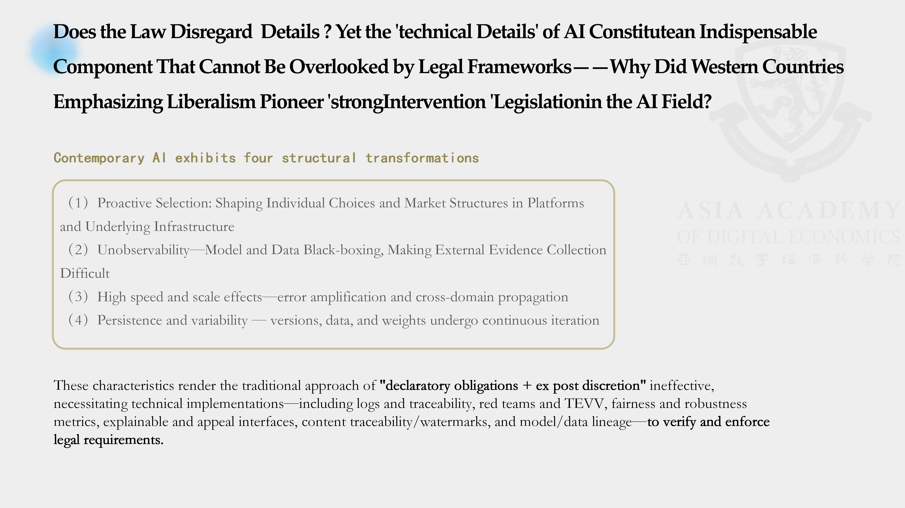
These characteristics show why technical detail has become governance-critical. Legal rules can define duties and boundaries, but without technical implementation they remain declaratory. A requirement that algorithms must not discriminate is meaningless without tools to detect and measure bias. A requirement of transparency or explainability cannot be realized without technical methods that make systems interpretable in practice. Technical means are therefore not optional supplements to law; they are the bridge that turns norms into enforceable practice.
International Consensus Level: Technical Assessment Is the "Common Language" of Cross-Border Governance
At the international level, technical assessment also has a unique coordinating function. In global governance, the most durable cross-border consensus often emerges not from purely state-led initiatives or purely private voluntary codes, but from hybrid arrangements involving governments, firms, and civil society. Technical standards and assessment tools are among the most important carriers of such hybrid governance.

Because they produce evidence that can be compared, repeated, and audited across jurisdictions, technical assessments function as a common language for transnational coordination. They allow countries with different legal traditions and political preferences to cooperate around shared evaluative practices, even where they cannot fully harmonize substantive law.
6. Future Outlook: The Technological Evolution Direction of Global AI Governance
As AI technology and governance continue to converge, global AI governance is likely to evolve along three broad lines: the creation of regulatory public goods, the professionalization and oversight of third-party auditing, and the gradual fusion of legal, tool-based, and methodological paradigms. The long-term endpoint is a more engineered form of regulation in which compliance is built directly into technical systems and development workflows.
Regulatory Public Goods and "Baseline Equality": Bridging the Global Governance Capacity Gap
Many low- and middle-income countries lack not only computing resources but also usable evaluation benchmarks, trusted audit services, and trained personnel. As AI markets mature, the ability to demonstrate safety and compliance may become a gatekeeping condition for market access and investor confidence. If technical governance tools remain concentrated in a few jurisdictions, inequality in regulatory capacity may deepen broader global inequality.
To avoid that outcome, part of the regulatory stack must be treated as a public good. At a minimum, countries need access to baseline testing capacity and credible auditing resources so that sovereignty and development prospects are not lost simply because of technical barriers. International and regional cooperation should therefore promote a global minimum test suite, open reporting formats, and regional verification nodes as widely accessible infrastructure.
The Rise and Governance of the Third-Party Audit Market: Mitigating Risks of Regulatory Outsourcing
As AI governance becomes more substantive, compliance is moving from self-assertion toward third-party verifiability. This will likely drive the growth of a new market for independent evaluation and assurance services, including testing and audit firms, red-teaming providers, and specialists in model forensics and supply-chain provenance.
But marketization also introduces new risks. Differences in capability, conflicts of interest, and uneven standards could turn outsourced assurance into a new source of governance failure. For that reason, third-party auditors themselves will need oversight mechanisms that assess competence, fairness, transparency, and independence. A multi-actor governance structure involving public authorities, market actors, and civil society will be essential to ensure that the audit market strengthens rather than weakens AI governance.
Paradigm Integration and "Compliance as Code": The Ultimate Form of Technologized Regulation
Over time, the three current paradigms are likely to converge. Official toolkits like Singapore’s may acquire stronger legal status. The EU’s legal model may absorb more automation and operational tooling. Methodological frameworks in countries such as the United States and Japan are already moving closer to practice by incorporating more concrete testing mechanisms. The distinctions between law, tools, and process may therefore become less rigid.
The likely endpoint is compliance as code, or compliance by design. Policy requirements would be operationalized through software development kits, policy compilers, CI/CD plugins, and similar engineering mechanisms. Regulatory demands would enter model development and deployment pipelines in real time, enabling continuous assurance rather than one-off review. In that mature model, governance forms a closed loop linking policy, metrics, code, and evidence. This is the logical end state of technologized regulation in the AI era.
- [1] Reuters. UN adopts first global artificial intelligence resolution. Reuters, March 21, 2024. reuters.com/technology/cybersecurity/un-adopts-first-global-artificial-intelligence-resolution-2024-03-21.
- [2] United Nations Digital Library. UN General Assembly Resolution A/RES/78/265: Seizing the opportunities of safe, secure and trustworthy artificial intelligence systems for sustainable development. UN Digital Library, 2024. digitallibrary.un.org/record/4040897.
- [3] American Journal of International Law. The UN General Assembly Adopts U.S.-Led Resolution on Safe, Secure, and Trustworthy Artificial Intelligence. American Journal of International Law, Vol. 118, No. 3, 2024, pp. 555-560. DOI: 10.1017/ajil.2024.37.
- [4] UN System Chief Executives Board for Coordination (UNSCEB). United Nations System White Paper on AI Governance. UNSCEB.org. unsceb.org/united-nations-system-white-paper-ai-governance.
- [5] UN Photo. UN General Assembly adopts AI resolution. media.un.org. media.un.org/photo/en/asset/oun7/oun7960474.
- [6] Saran, S. Data and AI for development: opportunities and challenges. UNCTAD, 2024. unctad.org/system/files/non-official-document/ecn162024_data_p02_SSaran_en.pdf.
- [7] International Telecommunication Union (ITU). UN Activities on AI: Report 2024. ITU.int, 2025. itu.int/net/epub/SG/SG/2025-UN-Activities-on-AI-Report-2024.
- [8] Info-communications Media Development Authority (IMDA), Singapore. Singapore Launches AI Verify Foundation. IMDA.gov.sg, 2023. imda.gov.sg/resources/press-releases-factsheets-and-speeches/press-releases/2023/singapore-launches-ai-verify-foundation.
- [9] UK Government. Introducing the AI Safety Institute. GOV.UK. gov.uk/government/publications/ai-safety-institute-overview/introducing-the-ai-safety-institute.
- [10] UK AI Safety Institute. Our first year: AISI work programme and achievements. AISI.gov.uk. aisi.gov.uk/work/our-first-year.
- [11] European Commission. New Legislative Framework for the Single Market. European Commission. single-market-economy.ec.europa.eu/single-market/goods/new-legislative-framework_en.
- [12] National Institute of Standards and Technology (NIST). AI Risk Management Framework (AI RMF 1.0). NIST.gov. nist.gov/itl/ai-risk-management-framework.
- [13] Ministry of Economy, Trade and Industry (METI), Japan. Governance Guidelines for Implementation of AI Principles (Japanese). METI.go.jp, January 2022. meti.go.jp/shingikai/mono_info_service/ai_shakai_jisso/pdf/20220128_2.pdf.
- [14] Hart, H. L. A. The Concept of Law. Oxford University Press, 1961.
- [15] Hildebrandt, M. Legal Protection by Design: Objections and Refutations. 2011/2017.
- [16] Hildebrandt, M. Smart Technologies and the End(s) of Law. Edward Elgar, 2015/2016.
- [17] Abbott, K. W., Levi-Faur, D., & Snidal, D. The Governance Triangle: Regulatory Standards, Institutions and the Shadow of the State. ResearchGate. researchgate.net/publication/228677087_The_Governance_Triangle.